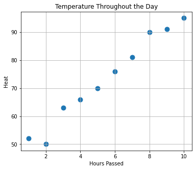
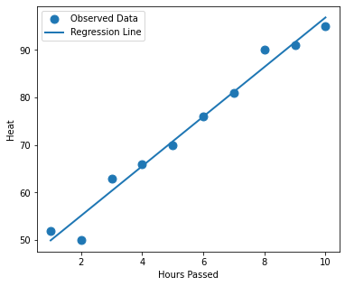
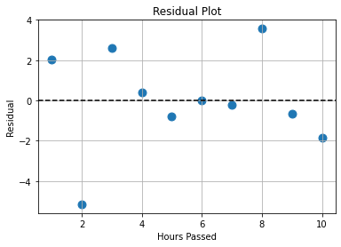

Week 4 Day 5 Lab#
Linear Regression#
Linear regression is a statistical method of finding the line of best fit. What we hope is that this line gives us enough information about the relationship between two variables that we can predict (at least somewhat) a value for a given input.
Typically,
X is called the independent variable (or predictor).
Y is called the dependent variable (or response).
The goal is to find the line that best describes the relationship between X and Y.
import numpy as np
import matplotlib.pyplot as plt
---------------------------------------------------------------------------
ModuleNotFoundError Traceback (most recent call last)
Cell In[1], line 2
1 import numpy as np
----> 2 import matplotlib.pyplot as plt
ModuleNotFoundError: No module named 'matplotlib'
Linear Regression Equation#
The equation of a simple linear regression line is
where
\(m\) = slope
\(b\) = y-intercept
In statistics, this equation is often written as
where
\( \hat{y}\) is the predicted value,
\(\beta_0\) is the intercept,
\(\beta_1\) is the slope.
Consider the following dataset:
hours = np.array([1,2,3,4,5,6,7,8,9,10])
heat = np.array([52,50,63,66,70,76,81,90,91,95])
plt.figure(figsize=(6,5))
plt.scatter(hours,
heat,
s=80)
plt.xlabel("Hours Passed")
plt.ylabel("Heat")
plt.title("Temperature Throughout the Day")
plt.grid()
plt.show()

While the relationship above is not quite linear, the relationship behaves somewhat linearly.
m, b = np.polyfit(hours,
heat,
1)
print("Slope:", m)
print("Intercept:", b)
Slope: 5.212121212121211
Intercept: 44.73333333333329
What the slope tells us is that as an hour passes, the model predicts a 5.2 degree increase. What the intercept tells us is that the model predicts a temperature of 44.7 at the start. Not that either of these are true. But, with the given data, we assume this and test whether that is indeed true.
plt.figure(figsize=(6,5))
plt.scatter(hours,
heat,
s=80,
label="Observed Data")
plt.plot(hours,
m*hours+b,
linewidth=2,
label="Regression Line")
plt.xlabel("Hours Passed")
plt.ylabel("Heat")
plt.legend()
plt.show()

Prediction in Linear Regression#
Now that we a linear estimation, we can make predictions:
m*24 + b # temperature in 24 hours
169.82424242424236
m*np.array([24,48])+b # temperature in one day and then the next
array([169.82424242, 294.91515152])
Residuals#
A residual is defined as $\( \text{Residual}=\text{Observed}-\text{Predicted} \)$
Residuals tell us how far each observation is from the regression line. Linear regression works by minimizing these. To compute them:
predicted = m*hours + b
residuals = heat - predicted
print(residuals)
[ 2.05454545 -5.15757576 2.63030303 0.41818182 -0.79393939 -0.00606061
-0.21818182 3.56969697 -0.64242424 -1.85454545]
plt.figure(figsize=(6,4))
plt.scatter(hours,
residuals,
s=80)
plt.axhline(0,
color="black",
linestyle="--")
plt.xlabel("Hours Passed")
plt.ylabel("Residual")
plt.title("Residual Plot")
plt.grid()
plt.show()

A good regression model has residuals randomly scattered around zero.
Regression is closely related to correlation!
np.corrcoef(hours,heat)
array([[1. , 0.98791075],
[0.98791075, 1. ]])
Interpretation:
Close to 1 → strong positive relationship.
Close to 0 → weak relationship.
Close to -1 → strong negative relationship.
Testing the Strength of Model#
A simple statistic (called \(R^2\)) is simply the square of the correlation we defined last time
If
R² = 0.94
then we say approximately 94% of the variation in heat is explained by hours passed.
rsquared = np.corrcoef(hours, heat)[0,1]**2
print(rsquared)
0.9759676542466995
Try it for yourself#
Pick a data set from GitHub and pick two features you like
Plot the data set
Perform linear regression and re-plot with regression line
Predict values that aren’t within the dataset
Compute the residuals and plot them to see if they are randomly spread around zero
Compute the \(R^2\) statistic for your model